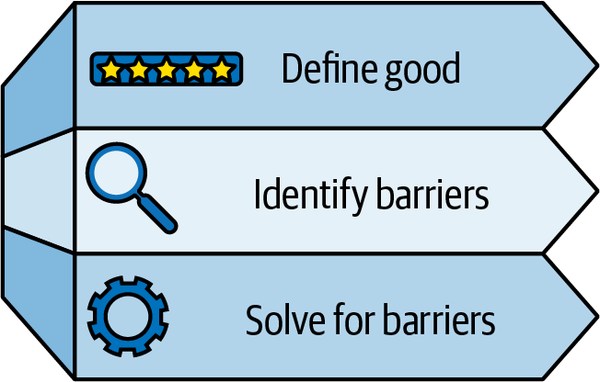
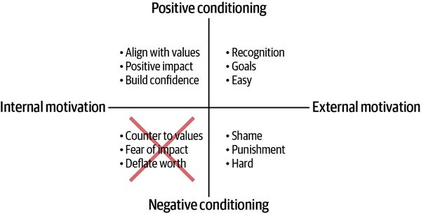

The third enterprise architecture principle in the very short manifesto for effective enterprise architecture is driving behavior over enforcing standards.
Chapters 2 and 5 talked about standards and requirements and the importance of both enabling and enforcing them. The principle of driving behavior over enforcing standards emphasizes this idea to say that while enforcement is important and necessary, especially in a well-managed, regulated environment, defining standards and requirements in terms of human behavior is even more valuable. This is because the quality of compliance depends on human behavior.
There are two broad categories for the quality of compliance:
The minimum level of compliance is a pass or fail type of compliance against the minimum level of satisfaction to the standard or requirement.
The optimum level of compliance is satisfying the minimum level and also doing more to get the most benefit out of the standard or requirement. This can get nuanced pretty quickly.
For example, let’s say there is an enterprise architecture standard to use a certain software programming language. The minimum level of compliance might be that the programming language is used. A more optimum level of usage might also consider the version used, best practices for managing memory and compute, using the right package manager, and using well-known, highly performant, vulnerability-free libraries.
Both the minimum and optimum levels are accelerated by incentivizing desired behavior.
For driving the right behavior, Figure 10-1 provides a simple framework to use.

You first have to define what good looks like. Is the minimum enough? Or is doing more, the optimal level, necessary?
From the example above, it could be that enforcement focuses on the minimum level to ensure that all software is developed using the standard programming language. While sufficient from a compliance perspective, from a human behavior perspective, it is likely better to go beyond the minimum and use the correct version without vulnerabilities.
After defining what good looks like, you then have to identify the barriers that prevent getting to that good outcome. For instance, why wouldn’t a software engineer use the standard software language? There could be many reasons, including but not limited to the following:
They didn’t know they were supposed to use that language.
They were more familiar with a different language and were more comfortable using what they knew.
The software application was already written in a different language, and using the standard language would require a refactoring and migration that they didn’t have time or priority for.
It is too hard to use the standard language; the development ecosystem isn’t set up to support using it.
They believe that a different language is better suited for their specific problem.
Last but not least, depending on the barrier, there are different ways to solve for driving the right behavior, as shown by Table 10-1.
| Potential barrier | Potential solutions |
|---|---|
|
The software engineer doesn’t know the requirement. |
Implement training. Conduct a communications campaign. Only allow for the required language to be used in software delivery processes. |
|
The software engineer is more familiar with other languages. |
Implement a training program to upskill talent. |
|
The software application is already using a different language. |
Prioritize refactoring or grant an exception. |
|
The development ecosystem is not set up to support the standard language. |
Do not require the standard until the development ecosystem is enabled. |
|
The software engineer prefers a different language for the specific problem. |
Allow for a champion/challenger model to allow for differentiated use cases and/or prove that the standard works fine. |
Human behavior is a complex topic. In my experience, behavior can be learned and conditioned.
Humans learn behaviors based on experiences. There are typically two kinds of learning:
This refers to increasing knowledge through explicit, deliberate choice. For example, a software engineer taking a training course.
This refers to implicit learning. For example, if a leader talks about the value of well-managed software and the importance of risk mitigation, the software engineer learns to value these things as well.
These types of learning, when coupled with conditioning, are what enable humans to develop habits. Conditioning refers to associating consequences to a given behavior:
Positive conditioning is often perceived as a reward. For example, if it is easy to complete a task, the human is likely to repeat that task. Positive conditioning could also involve recognition in the form of public appreciation for a job well done.
Negative conditioning is often perceived as punishments or friction. For example, if it is difficult to complete a task, the human is likely to look for a workaround or a way to bypass that difficulty in the future. Or, if credit is misplaced, the human is likely to not want to do the same work again.
Sometimes, friction is used as a tactic to drive the right behavior. Let’s reuse the software language example. An organization may focus on enabling the standard software language such that the software engineer does not have to take any extra steps to use that language. They can just write their software, build it, test it, and deploy it. Whereas because the organization does not invest in enabling other languages, using an alternative language may cause friction, such as needing to get exception approvals, needing to follow a custom path to get software library dependencies from the right repository, or needing to work with cybersecurity to make sure their software is scanned. The use of the alternative language may not be outright blocked due to legacy workloads that require it, but the friction induced by using it would help dissuade new software from being built with it.
Humans tend to be motivated to avoid friction when possible, so use friction with deliberate intent.
The next section looks more closely into motivation.
Human motivation is a key part of human behavior. There are two categories of sources of motivation that inspire humans to take action:
This refers to a source outside of the individual that appeals to pride, sense of accomplishment, and level of effort. For example, external motivation can come in the form of social approval such as rewards or recognition, ease of experience in simplifying effort, and organizational goals.
This refers to a source from within the individual that aligns to their values, interests, and sense of purpose. For example, internal motivation can come in the form of wanting to do the right thing, wanting to do fun things, and wanting to make a difference or an impact.
In the previous example, friction was used as an external source of motivation to drive the desired behavior. This is because when a compliance task is intrinsically rewarding or interesting, humans tend to complete it with joy rather than fear. The easier it is to comply, the better off you are in driving the right behavior.
Putting conditioning and motivation together leads to the framework illustrated by Figure 10-2.

While the framework in Figure 10-2 includes four quadrants for completeness, I have crossed out the quadrant in which internal motivation and negative conditioning intersect. This is because I do not recommend any tactics that land there. I believe that all humans have innate worth and deserve respect, and actions taken in this quadrant are counter to that belief.
Let’s review an example of applying this framework. Let’s say an organization is concerned about the costs of operating applications in the cloud. In the pay-as-you-go model, the cost of using cloud services is very transparent and can get expensive pretty quickly. Using the concepts of conditioning and motivation, an architectural strategy to improve efficiency could include the following to drive desired behavior:
Establish a training program to appeal to internal motivation for increasing knowledge, and positive conditioning for providing training.
Establish and sustain public rewards and recognition for bringing down expenses. Such positive conditioning appeals to external motivation for accomplishment and social awareness. Another tactic would be to heighten awareness of cost efficiency through leadership presentations, which appeals to external motivation for aligning with organizational goals. A third tactic could be to enable easy access to cost projections and reporting. This appeals to external motivation for simplifying effort and to positive conditioning for making cost management part of business-as-usual activities.
Define and enforce an automated control that restricts and prevents high-cost instance types from being used. Engineers would experience this consequence during their software build and deploy process, and the negative conditioning teaches them not to repeat this behavior.
Although these are not usually perceived as architecture, they are part of what would drive the desired human behavior to adhere to the architecture standard. As a result, considering human behavior and motivation is quite relevant and beneficial to delivering effective architecture standards and requirements.
Let’s examine a few anecdotal case studies and study the themes that they present.
Once upon a time, there was a company that had an enterprise architecture standard around cloud server instance types. With cost in mind, certain instance types were not allowed. For the most part, this worked fine—except for one day, when a machine learning (ML) team came along. They found that their ML workloads were failing. They consulted their architect, Addison, for help, and recommended looking into GPUs.
Addison quickly realized that GPUs were a proven industry recommendation for highly complex ML workloads. However, the standard did not allow for GPUs, and Addison wanted to comply with that standard. As a result, Addison ended up suggesting that the team reduce the complexity of their workload and deal with the lower-cost instance type. Frustrated, the team decided to eschew this guidance altogether and pursue an exception path, but Addison would not approve it. They escalated beyond Addison to their senior leadership, who, when told that the business could not meet their ML aims without this capability, decided to override Addison’s objections and grant the exception. The team ended up being able to use GPUs, and not necessarily in the most cost-conscious way.
What happened here?
Addison is an example of the administrative architect, someone so focused on compliance to rules, standards, and regulations that they end up not solving problems and business needs. As a result, their guidance is ineffective, and the perception of architecture becomes a negative one. If Addison had instead focused on the desired behavior (spend efficiency) and coupled that with the business need (highly complex ML workloads), she could have perhaps figured out a solution that utilized GPUs in a cost-effective way.
Key takeaways are summarized as follows.
Do:
Understand the intent of the standard or requirement in terms of the desired benefit, and the desired human behavior necessary to achieve that benefit.
Understand the business need.
Don’t:
Be afraid to challenge the standard if the standard needs to evolve.
Enforce the standard to the detriment of satisfying the business need.
There was another company that was trying to increase the stability of its applications to improve its customer satisfaction levels. As part of this agenda, the company’s enterprise architecture defined a resiliency standard that included a declaration that all new cloud-based applications would be active/active, meaning that they would be configured in a redundant deployment that could handle loads from either deployed stack.
This company also had data scientists who were supported by an enterprise architect named Ambrose. Ambrose listened when the data science teams came forward to say that active/active didn’t work for them. He asked several questions to better understand what the barriers were and determined that the issue was that the active/active pattern was written without understanding the data processing use case. Handling scheduled batch jobs or streaming data processing was a different scenario than a stateless web application, which was where the active/active pattern shined. When it came to these other scenarios, active/active did not make sense due to the risk of data duplication and the complexity of handling data processing events.
Ambrose explained to the team that achieving high resilience was very important, even in these scenarios, but he was open to figuring out a different way to achieve the outcome of swift recovery from failure. He worked with the team to figure out the best way to recover from failures in these scenarios, and he had them prove this method out with one of their batch-processing applications.
He then went back to the rest of the enterprise architecture team with a proposal to both modify the current active/active pattern such that it was clear that it only applied to web applications, and with a new resiliency pattern that was feasible for the batch-processing workloads. Both were approved, which allowed the data science teams to proceed and also achieve greater resiliency.
What happened here?
This example illustrates the ambassador architect, someone who brings a deep understanding of the standards and requirements that can guide teams on the expectations of adherence. As an ambassador, the architect understands that their job is to guide the team and drive right behaviors with the flexibility needed to allow for changes—whether that change is to effectively challenge the standard or requirement itself, or to change the team’s behaviors, or both. The ambassador architect is willing to take a stance but will also listen to feedback and act on that feedback to evolve and improve the architecture guidance.
Key takeaways are summarized as follows.
Do:
Allow for negotiation and flexibility to evolve standards as needed.
View architecture as a way to guide and problem-solve.
Don’t:
Be a pushover.
Be too rigid.
As demonstrated by these anecdotal case studies, it is better to be an ambassador architect—able to objectively represent standards and solve for business needs—than an administrative architect who can only enforce standards by rote.
Architecture standards and requirements are a key deliverable of an effective enterprise architecture practice. Enforcement of these standards and requirements is therefore a key piece of architecture governance. This chapter discussed the third recommended enterprise architecture principle—driving behavior over enforcing standards—to emphasize the benefits of defining compliance activities in terms of desired behavior.
Driving behavior refers to identifying what good looks like for humans to comply with the standard or requirement, and then determining the barriers in the way of performing that good behavior. Overcoming these barriers is possible, and a framework offered in this chapter combines the concepts of conditioning behavior with sources of motivation.
Positive conditioning means associating good consequences with a behavior, whereas negative conditioning is the opposite, associating bad consequences instead. External sources of motivation are those found outside an individual, and internal sources are from within an individual.
Ambassador architects are those who understand how to negotiate between the standard and the business problem at hand. They are unafraid to evolve the standard if that is necessary to solve the problem. On the opposite end of the spectrum are administrative architects, those who try to rigidly enforce the standard as a pass-or-fail construct and are unwilling to consider adaptation either by the team trying to comply or by the standard itself.
Thus, enforcement is an essential component of enterprise architecture, as elaborated in Chapters 2 and 5. Enforcement done in the context of driving behavior is what will achieve an optimum level of compliance to standards rather than just the minimum level or no level at all.
This chapter offered a few frameworks to help achieve this optimum level of compliance. As great as frameworks are, the next chapter dives into the fourth and last principle of the very short manifesto of effective enterprise architecture to discuss the power of evolution over frameworks.